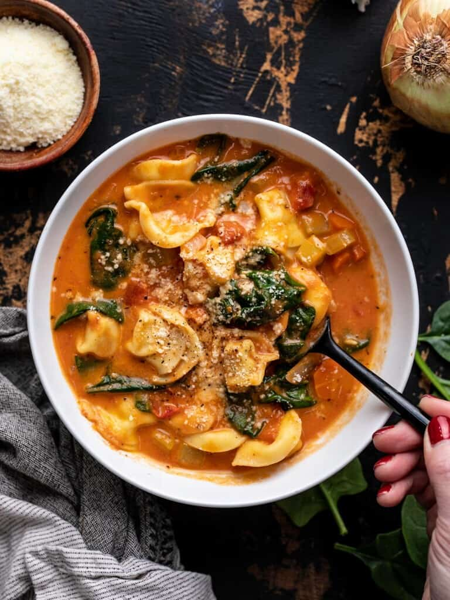

Creamy-Tortellini-Soup

Description
This Creamy Tortellini Soup features a rich tomato broth, hearty cheese tortellini, a medley of vegetables and tons of comfort in one bowl!
Ingredients
- 1 yellow onion
- 2 carrots
- 2 stalks celery
- 4 cloves garlic
- 2 Tbsp olive oil
- 4 Tbsp tomato paste
- 1 28oz. can crushed tomatoes
- 1.5 tsp Italian seasoning
- 4 cups vegetable broth
- 19 oz. cheese tortellini
- 1/2 cup heavy cream
- 4 oz. fresh spinach
- 3/4 tsp salt
- 1/4 tsp freshly cracked black pepper
Steps
- Dice the onion, carrot, and celery. Mince the garlic. Add the onion, carrot, celery, and garlic to a large soup pot along with the olive oil. Sauté over medium heat until the onions soften (about 5 minutes).
- Dice the onion, carrot, and celery. Mince the garlic. Add the onion, carrot, celery, and garlic to a large soup pot along with the olive oil. Sauté over medium heat until the onions soften (about 5 minutes).
- Add the crushed tomatoes, Italian seasoning, and vegetable broth to the pot. Stir to combine and dissolve any tomato paste off the bottom of the pot.
- Turn the heat up to medium-high and bring the soup up to a simmer. Let the soup simmer for about 10 minutes, stirring occasionally.
- Add the frozen tortellini to the soup and boil for about 3 minutes, or the recommended time on the package needed to cook the tortellini.
- Turn the heat off. Stir the heavy cream into the soup. Stir the fresh spinach into the soup until wilted.
- Taste the soup and season with salt and pepper to taste (we added about ¾ tsp salt and ¼ tsp pepper).